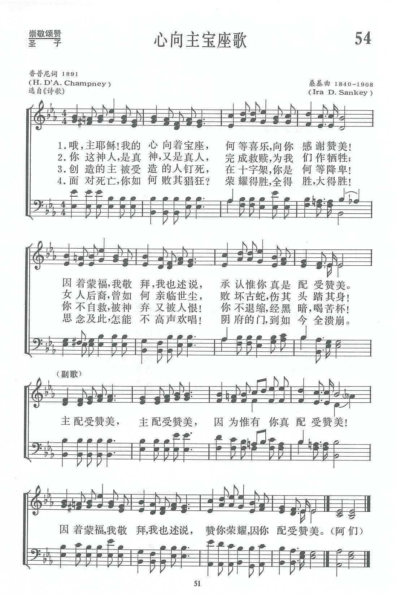

|
|
|
|
1 Jesus, our Lord, with what joy we adore Thee, Refrain: 2 Verily God, yet become truly human— 3 How didst Thou humble Thyself to be taken, 4 How hast Thou triumphed, and triumphed with glory, |
054首 《心向主宝座歌》 |
|
https://www.zanmeishige.com/tab/13685.html?songbook=1&index=54

|
|
|
|
|


- Jesus, Our Lord, With What Joy We Adore Thee (Remembered) https://youtu.be/zLl2NlHxghc
-
Lord Thou Art Worthy | Jesus Our Lord With What Joy We Adore Thee
https://youtu.be/0PwiK7Gihq8 - Jesus Our Lord with what Joy we adore Thee || Online Collaboration https://youtu.be/xO4WzoDDr1g
| Text: | Lord, Thou Art Worthy |
| Author: | H. D'A. Champney |
| Tune: | [Jesus, our Lord, with what joy we adore Thee] |
| Composer: | Ira D. Sankey |
| Short Name: | H. D'Arcy Champney |
| Full Name: | Champney, Henry D'Arcy, 1854-1942 |
| Birth Year: | 1854 |
| Death Year: | 1942 |
Born: Circa July 1854, District of York, Yorkshire, England.
Educated at Corpus Christi College, Cambridge, and ordained an Anglican cleric, Champney served at St. Andrew the Less in Cambridge. He eventually left the Church of England and became associated with the Plymouth Brethren. As of 1881, he was living in Cambridge. In 1901, he was living in Tiverton, Devonshire, and listed as a retired clergyman and schoolmaster.
--www.hymntime.com/tch/
Tune Information
| Title: | REMEMBERED |
| Composer: | Ira David Sankey (1891) |
| Incipit: | 54515 35424 36771 |
| Key: | E♭ Major |
| Copyright: | Public Domain |

第54首 心向主宝座歌 Jesus，our Lord，with what joy we adore Thee _Champney
经文：“必有宝座因慈爱坚立”(赛16：5)．
《心向主宝座》的词作者香普尼(H.D’A．Champney)生平不详，但知是后人将这首诗配上了桑基的曲。
桑基(Ira D．Sankey，1840—1908)生于美国宾夕法尼亚州，自幼参加美以美会的活动。17岁时，他的父亲说：“我看这孩子将来除去每天在腋下夹着一本赞美诗到处跑和歌唱之外，不会找别的工作。”的确，他经常在教会的主日学中教唱赞美诗，后来果然成为一位世界著名的福音赞美诗歌唱者。他曾任过宾夕法尼亚州青年会的总干事。为建造青年会会址，他募集了4万美元。后来慕迪(D．L.Moody)布道，他与慕迪同工，在布道会上教唱福音诗歌，也曾编辑并创作过许多首赞美诗。
他曾将他的作品编辑好，准备出版，但一次失火将他的原稿烧毀。19O6年他眼睛失明后，还出版了一本《我的生平及福音赞美诗的故事》，在书中说：“我不是一个音乐家，也不是个歌唱家，我从来没有学过唱，我唱歌未曾受过艺术教育，但我对所唱的歌，每一句、每一字都了解。我每唱一首福音赞美诗都必须有把握将这首赞美诗唱进每一个听众的内心中去。我常感觉到好的曲调容易找，但好的歌词却不容易找。”
桑基一生创作了几十首福音赞美诗，其中三十首至今仍被教会在聚会中歌唱。他所谱的曲调《新编》里选用了54、58、116、217、231、288、308、337等八首。